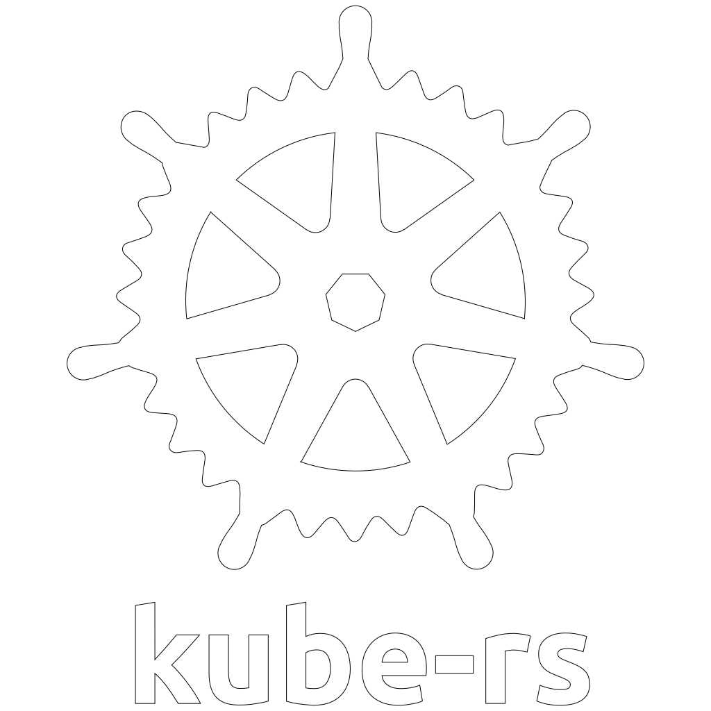
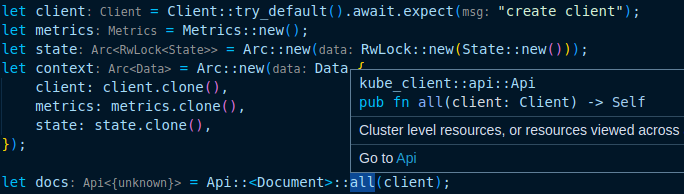
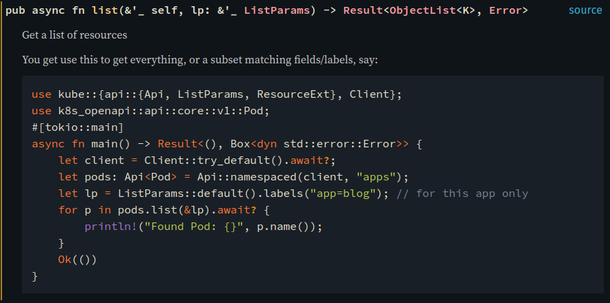

<!DOCTYPE html>
<html lang="en">
  <head>
    <meta charset="utf-8" />
    <meta name="viewport" content="width=device-width, initial-scale=1.0, maximum-scale=1.0, user-scalable=no" />

    <title>reveal-md</title>
    <meta property="og:title" content="reveal-md" />
    <meta property="og:type" content="website" />
    <meta property="og:image" content="https://clux.github.io/kubecon2022//featured-slide.jpg" />
    <meta property="og:url" content="https://clux.github.io/kubecon2022/" />
    <link rel="shortcut icon" href="./favicon.ico" />
    <link rel="stylesheet" href="./dist/reset.css" />
    <link rel="stylesheet" href="./dist/reveal.css" />
    <link rel="stylesheet" href="./dist/theme/moon.css" id="theme" />
    <link rel="stylesheet" href="./css/highlight/nord.css" />


  </head>
  <body>
    <div class="reveal">
      <div class="slides"><section  data-markdown><script type="text/template">### Kube Introduction

- Eirik Albrigtsen
- [github/clux](https://github.com/clux) / [@sszynrae](https://twitter.com/sszynrae)
- [https://kube.rs](https://kube.rs)
- slides at http://clux.github.io/kubecon2022

<aside class="notes"><ul>
<li>eirik - one of the main maintainers on kube-rs.</li>
<li>before we start off; here&#39;s a bunch a bunch of links, me, sources, slides</li>
<li>go by clux on github, or that on twitter</li>
<li>purpose of this is to give a quick ecosystem tour plus a chance for some q/a</li>
</ul>
</aside></script></section><section  data-markdown><script type="text/template">
<a href="https://kube.rs/"></a>

- Rust client for Kubernetes inspired by client-go <!-- .element: class="fragment" -->
- Runtime inspired by controller-runtime <!-- .element: class="fragment" -->
- Derive macro for CRDs inspired by kubebuilder <!-- .element: class="fragment" -->


<aside class="notes"><ul>
<li>basically reimaginings of: client-go, controller-runtime, kubebuilder, for the rust world</li>
<li>tons of people have helped make kube support almost as wide as the go land</li>
<li>managed in a single repo that&#39;s versioned together</li>
<li>CNCF sandbox</li>
</ul>
</aside></script></section><section  data-markdown><script type="text/template">​

- Safety + Expressiveness <!-- .element: class="fragment" -->
- Major adoption even in big companies <!-- .element: class="fragment" -->
- Very popular among developers <!-- .element: class="fragment" -->

<aside class="notes"><ul>
<li>very hard to write a large class of common errors, such as null ptr deref and data races</li>
<li>expressive types that can deal with real world complexity, doesn&#39;t hide things</li>
<li>starting to get huge adoption in major companies (aws/microsoft/bouyant/datadog projs)</li>
<li>huge popularity, stackoverflow survey has topped it since 2015 - why? DEVX</li>
</ul>
</aside></script></section><section  data-markdown><script type="text/template">​

- Developer experience <!-- .element: class="fragment" -->



- Safety <!-- .element: class="fragment" -->
- Documentation <!-- .element: class="fragment" -->

<aside class="notes"><ul>
<li>error messages tell you what to do, compilers and linters can --fix your code</li>
<li>rust-analyzer: vs code into ide, gray =&gt; types, not in the source, browse to source outside your crate (even in stdlib)</li>
<li>much easier to reason about part of code that matters - easy to give to juniors and easy to review (logic errors only), never afraid to merge</li>
</ul>
</aside></script></section><section  data-markdown><script type="text/template">### docs.rs


<aside class="notes"><ul>
<li>docs, signature, clickable links to all types, view source - every crate has this on docs.rs</li>
<li>examples these are guaranteed to build, many runnable</li>
<li>rip stackoverflow</li>
</ul>
</aside></script></section><section  data-markdown><script type="text/template">### Why Not Rust

- Kubernetes + client-go comes first
- Rust is behind <!-- .element: class="fragment" -->
- Rust support needs community support <!-- .element: class="fragment" -->
- Outstanding features <!-- .element: class="fragment" -->

<aside class="notes"><ul>
<li>all sorts of lofty ideas as to why you might choose rust over go here, and you are likely self-selecting, but there are concerns</li>
<li>but to some extent we are playing catch up, and need community support (limited amount of people applying elbow grease atm)</li>
<li>but there are things we don&#39;t have yet like protobuf support and apply configurations</li>
<li>so up to us to convince you that it&#39;s still worth giving kube-rs a try</li>
</ul>
</aside></script></section><section  data-markdown><script type="text/template">### Rust Kubernetes Client

- Config
- Client
- Api

<aside class="notes"><ul>
<li>first of all we are a client library; kube_client crate</li>
<li>has Config (disk config repr or in-cluster evar repr)</li>
<li>that can be turned into a Client</li>
<li>with a client you can make api instances; do operations on k8s resources</li>
</ul>
</aside></script></section><section  data-markdown><script type="text/template">### Client Standard

```rust
let client = Client::try_default().await?;
```

==

```rust
let config = Config::infer().await?
let Client = Client::try_from(config)?;
```

<aside class="notes"><ul>
<li>99% use case; checks local config, then does cluster auth</li>
<li>creates a client from this inferred config with default parameters</li>
<li>default parameters are very tuned and all the layers of these are available</li>
<li>layers?</li>
</ul>
</aside></script></section><section  data-markdown><script type="text/template">### Client Advanced

```rust
let config = Config::infer().await?;
let https = config.rustls_https_connector()?;
let service = tower::ServiceBuilder::new()
    .layer(config.base_uri_layer())
    .option_layer(config.auth_layer()?)
    .service(hyper::Client::builder().build(https));
let client = Client::new(service, config.default_namespace);
```

<aside class="notes"><ul>
<li>layers; tower; service builder trait - complex thing great for api libs</li>
<li>our Client is &quot;just a Service&quot; composed of our default layer and a connector</li>
<li>closest thing we can get to sans-io in rust</li>
<li>bring something that implements a Service and you can customize</li>
</ul>
</aside></script></section><section  data-markdown><script type="text/template">### Client Standard

```rust
let client = Client::try_default().await?;
```

<aside class="notes"><ul>
<li>in practice; just use the above, get light-weight hyper (likely in tree)</li>
<li>we generally just figure out the most sensible thing</li>
<li>our auth layer deals basic auth, bearer tokens, refresh tokens via files, oauth, or that scary exec based stuff that someone thought was a good idea, that&#39;s now coming back to bite everyone. but yeah, we support everything</li>
<li>and when you have a Client, you can query the api</li>
</ul>
</aside></script></section><section  data-markdown><script type="text/template">
### Api Runthrough 1

```rust
let nodes: Api<Node> = Api::all(client);
let n = nodes.get("k3d-main-server-0").await?;

for node in nodes.list(&ListParams::default()).await? {
    println!("Found node {}", node.name());
}
```

<aside class="notes"><ul>
<li>you can do get and list operations on resources (here nodes)</li>
<li>note async syntax in rust to await return from api</li>
</ul>
</aside></script></section><section  data-markdown><script type="text/template">### Api Runthrough 2

```rust
let pods: Api<Pod> = Api::default_namespaced(client);
let p = pods.get("blog").await?;

for pod in pods.list(&ListParams::default()).await? {
    println!("Found pod {}", pod.name());
}
```

<aside class="notes"><ul>
<li>api is generic, same interface for all pods</li>
<li>can do all the things, delete, delete_collection, create, patch</li>
</ul>
</aside></script></section><section  data-markdown><script type="text/template">### Api Runthrough 3

```rust
let pods: Api<Pod> = Api::default_namespaced(client);
let p: Pod = serde_json::from_value(json!({
    "apiVersion": "v1",
    "kind": "Pod",
    "metadata": { "name": "blog" },
    "spec": {
        "containers": [{
            "name": "blog",
            "image": "clux/blog:0.1.0"
        }],
    }
}))?;
pods.patch("blog", &serverside, &Patch::Apply(p)).await?
```

<aside class="notes"><ul>
<li>you can patch, or serverside apply</li>
<li>either from openapi generated structs</li>
<li>or you can force serialize into structs with this syntax checked json macro</li>
</ul>
</aside></script></section><section  data-markdown><script type="text/template">### Api Runthrough 4

```rust
let pods: Api<Pod> = Api::default_namespaced(client);
let status = pods.get_status("blog").await?
```

<aside class="notes"><ul>
<li>standard subresource operations</li>
<li>Status + Scale are the two main generic subresources</li>
<li>can patch/replace these</li>
</ul>
</aside></script></section><section  data-markdown><script type="text/template">### Api Runthrough 5

```rust
let pods: Api<Pod> = Api::default_namespaced(client);

let cmd = vec!["sh", "-c", "for i in $(seq 1 3); do date; done"]
let params = AttachParams::default().stderr(false);
let attached = pods.exec("blog", cmd, &params).await?;
```

<aside class="notes"><ul>
<li>we also implement all the special subresources for special case resources</li>
<li>you can exec into pods, and you get a set of io streams back that you can tail or pipe into another streams</li>
<li>i.e. take stdin from your cli and pipe it to a container =&gt; teleport</li>
<li>or you can issue kill signals, controller called hahaha that kills sidecars in jobs when main container is dead</li>
</ul>
</aside></script></section><section  data-markdown><script type="text/template">### Api Runthrough 6

```rust
let pods: Api<Pod> = Api::default_namespaced(client);

let mut stream = pods.watch(&lp, "0").await?.boxed();
while let Some(we) = stream.try_next().await? {
    // TODO: match on we: WatchEvent
}
```

<aside class="notes"><ul>
<li>streams; async iteration; unlike list where we had to await the full list</li>
<li>here we await each element - using TryStream trait</li>
<li>this is base api where you get WatchEvents</li>
<li>we don&#39;t recommend you actually use this kubernetes api directly because of tons of footguns, it&#39;ll desync, reset on you, you need to bookkeep resourceversions etc.</li>
</ul>
</aside></script></section><section  data-markdown><script type="text/template">### Api End

docs.rs/kube + kube-rs/examples

- docs.rs [`kube::Client`](https://docs.rs/kube/latest/kube/struct.Client.html)
- docs.rs [`kube::Api`](https://docs.rs/kube/latest/kube/struct.Api.html)
- [examples](https://github.com/kube-rs/kube-rs/tree/master/examples)
- [examples/kubectl](https://github.com/kube-rs/kube-rs/blob/master/examples/kubectl.rs)

<aside class="notes"><ul>
<li>basic of a library</li>
<li>we support pretty much the full api, so that&#39;s super close to client-gold</li>
<li>but we don&#39;t have protobuf support yet -&gt; codegeneration</li>
</ul>
</aside></script></section><section  data-markdown><script type="text/template">### Code Generation

- kube-derive
- kopium
- schemars
- k8s-openapi
- k8s-pb


<aside class="notes"><ul>
<li>big part of rust eco, big reliance on schemas, need to be able to convert</li>
<li>want to reduce the boilerplate code you have to write</li>
<li>want this to be attractive from people coming from go ecosystem</li>
<li>lots of efforts around - not just from us</li>
<li>mention the components briefly because feeds into future plans as well as what helpers you should pull in from other parts</li>
</ul>
</aside></script></section><section  data-markdown><script type="text/template">### Codegen; k8s-openapi

```rust
use k8s_openapi::api::core::v1::{Pod, Node};
use k8s_openapi::apiextensions_apiserver::pkg::apis{
  apiextensions::v1::CustomResourceDefinition
};
```

<aside class="notes"><ul>
<li>where all structs come from atm, where I&#39;ve been using Pod, Node, C.R.D. type they come from here</li>
<li>hefty import paths, but mirrors the upstream paths, all versioned</li>
<li>arnavion maintains this</li>
<li>but it is not using protobuf</li>
</ul>
</aside></script></section><section  data-markdown><script type="text/template">### Codegen; k8s-pb

```rust
use k8s_pb::api::core::v1::{Pod, Node};
use k8s_pb::apiextensions_apiserver::pkg::apis{
  apiextensions::v1::CustomResourceDefinition
};
```
**WIP**

<aside class="notes"><ul>
<li>we have structs, but they are not really usable yet.</li>
<li>need to do some work on the client, accept protobuf envelopes</li>
<li>but the goal is that this will be the drop-in replacement for kube</li>
<li>and we have tons of ideas of how this can improve the life of people interacting with big and bulky structs</li>
</ul>
</aside></script></section><section  data-markdown><script type="text/template">### Codegen; CustomResource derive

```rust
#[derive(CustomResource, Deserialize, Serialize, Clone, Debug)]
#[derive(JsonSchema)]
#[kube(kind = "Document", group = "kube.rs", version = "v1")]
#[kube(namespaced, shortname = "doc")]
pub struct DocumentSpec {
    title: String,
    hide: bool,
    content: String,
}
```

```rust
let api: Api<Document> = Api::default_namespaced(client);
```


<aside class="notes"><ul>
<li>creates a Document type; that behaves as a k8s-openapi type</li>
<li>basically tons of wrappers for a type to be able to to post crds to kube</li>
<li>this does all of that. it has properties similar to kubebuilder, but all generated and checked at compile time, no generated code in your repo.</li>
<li>we can generate crd schemas for the type.</li>
</ul>
</aside></script></section><section  data-markdown><script type="text/template">### Codegen; Schemars

```rust
#[derive(JsonSchema)]
pub struct MyStruct {
    my_bool: bool
}
```
generates
```json
{
  "title": "MyStruct",
  "type": "object",
  "required": [
    "my_bool",
  ],
  "properties": {
    "my_bool": {
      "type": "boolean"
    }
  }
}
```

<aside class="notes"><ul>
<li>a derive macro that feels like complete magic</li>
<li>but works because you can write out schemas for bools, ints, strings etc</li>
<li>and you can slowly build up schemas for lists, maps using those</li>
<li>..you end up with this huge json blob that k8s will accept</li>
<li>go back and show with kube-derive</li>
<li>rust -&gt; schema, what about other way?</li>
</ul>
</aside></script></section><section  data-markdown><script type="text/template">### Codegen; kopium

```sh
curl -sSL https://somecrd.yaml | kopium -Af - > gen.rs
```


<aside class="notes"><ul>
<li>kopium takes a crd with schema, and generates rust structs</li>
<li>if you have a go controller, take its schema</li>
<li>you got a big part of your rust controller there</li>
<li>still pretty new, some issues, but definitely helping a lot of people</li>
</ul>
</aside></script></section><section  data-markdown><script type="text/template">### Runtime

- watcher
- reflector
- event recorder
- conditions
- Controller


<aside class="notes"><ul>
<li>we are also runtime; kube_runtime runtime, similar to controller-runtime</li>
<li>has api abstractions - client-go/tools</li>
<li>watcher - to continuously watch an api forever</li>
<li>reflector - to cache data</li>
<li>controllers, glue it all together so you can build a reconciler around an owned object</li>
</ul>
</aside></script></section><section  data-markdown><script type="text/template">### Runtime; watcher

```rust
let nodes: Api<Node> = Api::all(client);
let mut stream = watcher(nodes, lp).applied_objects().boxed();
while let Some(n) = stream.try_next().await? {
    info!("saw node {}", n.name())
}
```

<aside class="notes"><ul>
<li>watchers; state machinery to keep a single continuous stream</li>
<li>when you flatten the internal watch events stream with <code>applied_objects</code> you just get a stream of objects</li>
<li>and it stays open forever</li>
<li>works for every object because it takes an Api</li>
</ul>
</aside></script></section><section  data-markdown><script type="text/template">### Runtime; reflector

```rust
let nodes: Api<Node> = Api::all(client);
let watch = watcher(nodes, lp);

let (reader, writer) = reflector::store();
let stream = reflector(writer, watch).applied_objects()
```

<aside class="notes"><ul>
<li>reflectors; something you can chain a watcher stream into</li>
<li>maintains a map of what&#39;s currently in the cluster</li>
<li>writer is moved in to the reflector, you keep a reader handle</li>
<li>can pass the reader handle to a web server or whatever, it&#39;s clonable</li>
<li>and provides a way to query the cluster without making extra api calls</li>
</ul>
</aside></script></section><section  data-markdown><script type="text/template">### Runtime; recorder

```rust
let recorder = Recorder::new(client, reporter, objref);
recorder.publish(Event {
    type_: EventType::Normal,
    reason: "HiddenDoc".into(),
    note​s: Some(format!("Hiding `{}`", name)),
    action: "Reconciling".into(),
    secondary: None
}).await
```

<aside class="notes"><ul>
<li>eventrecorder fairly common that that&#39;s pretty clean already</li>
<li>creates events, shows up in kubectl describe</li>
<li>NB: zwsp in notes...</li>
</ul>
</aside></script></section><section  data-markdown><script type="text/template">### Runtime; conditions

```rust
let crds: Api<CustomResourceDefinition> = Api::all(client);
let name = "documents.kube.rs";
let cond = conditions::is_crd_established();
let time = Duration::from_secs(10);
timeout(time, await_condition(crds, name, cond)).await?;
```

<aside class="notes"><ul>
<li>conditions - abstraction that watches until a certain state in the status object has been seen</li>
<li>we expose some basic conditions; is_deleted, is_crd_established, is_pod_running, but beyond that currently have small helpers</li>
<li>tricky to write generically because objects don&#39;t need to have same fields, even spec/status conventions are even maintained within kubernetes</li>
<li>can make this easier with next object generation setup (by selectively generating traits such as HasSpec and HasStatus or HasConditions)</li>
</ul>
</aside></script></section><section  data-markdown><script type="text/template">### Runtime; controller

```rust
let ctx = Arc::new(Data { client });
Controller::new(crdapi, lp)
    .owns(configmaps, lp)
    .run(reconcile, error_policy, ctx)
```

<aside class="notes"><ul>
<li>when you want to sync an object spec with some state</li>
<li>you configure your main api, here some crd</li>
<li>configure an owned resource (here configmaps), that will trigger reconcile of owning object by traversing ownerAnnotations</li>
<li>you pass in two functions; reconcile and error_policy</li>
<li>and you then have to write a reconciler</li>
</ul>
</aside></script></section><section  data-markdown><script type="text/template">### Runtime; reconcilers

```rust
#[instrument(skip(ctx, doc))]
async fn reconcile(doc: Arc<Document>, ctx: Arc<Data>)
    -> Result<Action, Error>
{
    let client = ctx.client.clone();
    let ns = doc.namespace().unwrap();
    let docs: Api<Document> = Api::namespaced(client, &ns);
    // TODO: use doc spec to create/update owned resources
    Ok(Action::requeue(Duration::from_secs(30 * 60)))
}
```

<aside class="notes"><ul>
<li>reconciler ends up like this - kube invokes it when your object changes</li>
<li>or anything it owns or watches changes</li>
<li>but it figures out what&#39;s the parent and that&#39;s what you get called for</li>
<li>also get context you passed in.</li>
<li>then you get to correct the state of the world.</li>
<li>it&#39;s all very fun writing idempotent reconcilers, and i could talk for days about it</li>
<li>we have a whole section dedicated to controller writing on our website - not all done - but if you need a controller go read it</li>
</ul>
</aside></script></section><section  data-markdown><script type="text/template">### Runtime; finalizers

```rust
finalizer(&api, "docs.kube.rs/cleanup", obj, |event| async {
    match event {
        Event::Apply(api) => apply(api, ..args).await,
        Event::Cleanup(api) => cleanup(api, ..args).await,
    }
}).await
```

<aside class="notes"><ul>
<li>common patterns like finalizers we have helpers, wrap reconcile, pass finalizer</li>
<li>you can split your main reconcile into two fns apply/cleanup that you create</li>
</ul>
</aside></script></section><section  data-markdown><script type="text/template">### Runtime End

- docs.rs [reflector](https://docs.rs/kube/latest/kube/runtime/fn.reflector.html)
- docs.rs [watcher](https://docs.rs/kube/latest/kube/runtime/fn.watcher.html)
- docs.rs [conditions](https://docs.rs/kube/latest/kube/runtime/wait/conditions/index.html)
- docs.rs [Controller](https://docs.rs/kube/latest/kube/runtime/struct.Controller.html)
- docs.rs [finalizer](https://docs.rs/kube/latest/kube/runtime/finalizer/fn.finalizer.html)
</script></section><section  data-markdown><script type="text/template">### Runtime End

- [kube.rs controller guide](https://kube.rs/controllers/intro/)
- [kube-rs/version-rs](https://github.com/kube-rs/version-rs/blob/main/version.rs)
- [kube-rs/controller-rs](https://github.com/kube-rs/controller-rs)

<aside class="notes"><ul>
<li>100 line reflector with axum, tracing, presents a deployment api</li>
<li>best practices controller that we update with kube-rs; tracing, metrics, logs, crd generation from schema and kube-derive</li>
</ul>
</aside></script></section><section  data-markdown><script type="text/template">### QA

- TODO: discord / github discussions / issues ?

<aside class="notes"><ul>
<li>TODO: links</li>
</ul>
</aside></script></section><section  data-markdown><script type="text/template">### TL;DR: kube
- rust controllers
- schema transformations
- no need to reinvent the wheel
- RIIR

<aside class="notes"><ul>
<li>TODO: remove</li>
</ul>
</aside></script></section></div>
    </div>

    <script src="./dist/reveal.js"></script>

    <script src="./plugin/markdown/markdown.js"></script>
    <script src="./plugin/highlight/highlight.js"></script>
    <script src="./plugin/zoom/zoom.js"></script>
    <script src="./plugin/notes/notes.js"></script>
    <script src="./plugin/math/math.js"></script>
    <script>
      function extend() {
        var target = {};
        for (var i = 0; i < arguments.length; i++) {
          var source = arguments[i];
          for (var key in source) {
            if (source.hasOwnProperty(key)) {
              target[key] = source[key];
            }
          }
        }
        return target;
      }

      // default options to init reveal.js
      var defaultOptions = {
        controls: true,
        progress: true,
        history: true,
        center: true,
        transition: 'default', // none/fade/slide/convex/concave/zoom
        plugins: [
          RevealMarkdown,
          RevealHighlight,
          RevealZoom,
          RevealNotes,
          RevealMath
        ]
      };

      // options from URL query string
      var queryOptions = Reveal().getQueryHash() || {};

      var options = extend(defaultOptions, {"transition":"none","center":false}, queryOptions);
    </script>


    <script>
      Reveal.initialize(options);
    </script>
  </body>
</html>
